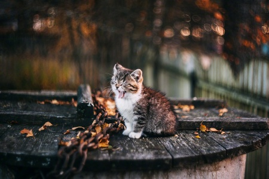

信
下雪了。
白色的雪花落在庭院长青的树上，落在小径旁枯黄的草上，也落在他的肩上，他的头上。
他看着雪花由稀疏寥寥变的铺天盖地。却始终难有一片落在他前伸摊开的手掌上。
因为他的手是温暖的，而雪却喜凉。
南去的雁现在还不会回来，他期待着雁能早些归来，可是就算来了又能怎样，也不会带来他想要的。
却又期待这冬天长些，长些，再长些，最好永远都不会结束。这样，失望就能来的晚些了吧。
下雪了。
白色的雪花落在庭院长青的树上，落在小径旁枯黄的草上，也落在他的肩上，他的头上。
他看着雪花由稀疏寥寥变的铺天盖地。却始终难有一片落在他前伸摊开的手掌上。
因为他的手是温暖的，而雪却喜凉。
南去的雁现在还不会回来，他期待着雁能早些归来，可是就算来了又能怎样，也不会带来他想要的。
却又期待这冬天长些，长些，再长些，最好永远都不会结束。这样，失望就能来的晚些了吧。
当第一缕阳光洒下来的时候，我睁开了眼。听身旁的大树说：今天是个无风，无云，无雨的平凡日子；就算是有风有云有雨也依旧是个平凡的日子。
他总是说些饶舌的伤脑筋的话。我不知道什么是风，什么是云，什么是雨，他的话我也是半懂不懂。只是知道，今天不管有风无风，有云无云，有雨无雨，无论如何都将是个平凡的日子，一如平凡日子里出生的平凡的我。
他还说，我会朝生而暮死，说啊，我的生命非常非常短暂，以至于短暂的绝望；又说什么他的生命非常非常漫长，漫长的绝望；求生的求生不能，寻死的寻死不得。我依旧不懂，只是觉得：这种说法像是说着，生命无论长或是短都是绝望的。

当我问他什么是朝什么是暮的时候。他像是听了好笑的笑话一样，参天的枝干都在摇晃，所有的叶子也在颤抖着。他哈哈大笑着，说我这样懵懵懂懂的生，懵懵懂懂的死，真好。
当我问他什么是生什么是死的时候。他依旧笑着，只是笑声透着沧桑以及我听不出来的别样情绪。他参天的枝干剧烈摇晃，所有的叶子也在颤抖着。像是这个笑话比刚那个笑话更好笑一样，他青色的叶子都因为剧烈摇晃而落了许多。